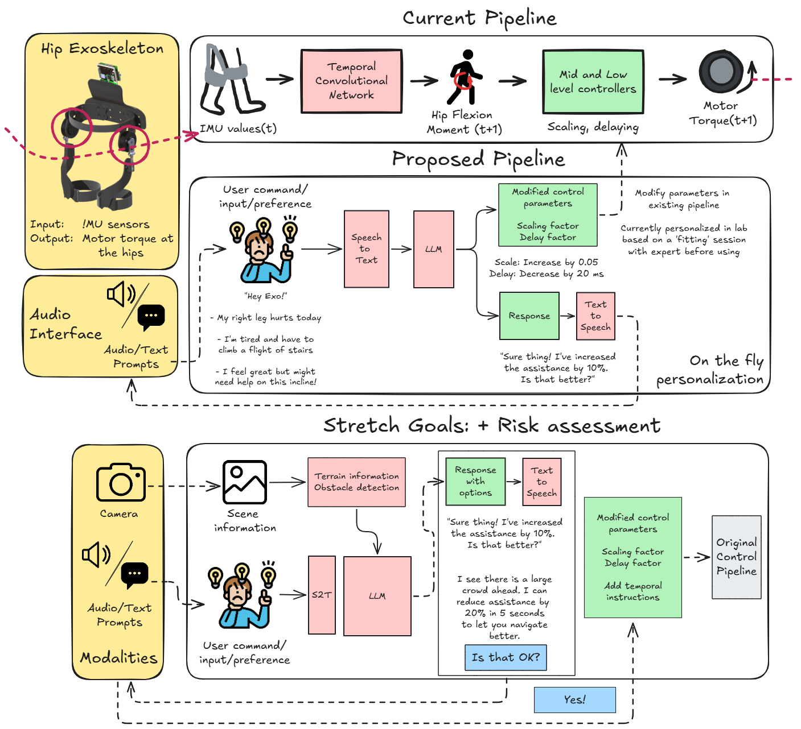

VLM-based human–robot voice interface
Built a multimodal pipeline for long-horizon, language-driven control: finetuned a compact vision-language model (Qwen3-VL-2B with SFT and LoRA) on a custom dataset pairing egocentric-style scenes, spoken-style instructions, and exoskeleton-relevant control targets, including deliberate ambiguity so the policy cannot rely on template phrases.
The emphasis was on whether vision plus audio grounding could support stable parameter proposals across sessions—not just single-turn demos—mirroring how wearable assist devices are actually used.